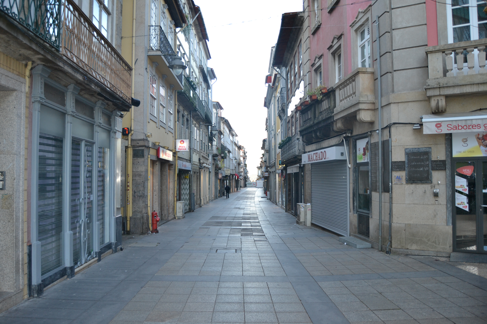

Rua do Souto, Porta do Souto - vista norte.Rua do Souto, Porta do Souto - vista sul.

Imagem atual da RuaImagem atual da Rua
Rua chave de todo o urbanismo e vida económica bracarense, a rua do Souto, terá sido, pelo menos desde o séc. XVII, a mais importante da cidade.
Quando se construiram as muralhas de Braga pensou-se logo no possível crescimento citadino. A metade Sul,
já habitada e arruada com artérias cujo traçado remonta aos romanos, ficou protegida; a metade Norte continuou vazia, com campos, que lentamente se foram enchendo.
Primeiro foi a rua Nova, mais tarde chamada do Campo; depois, em 1565, a dos Gatos ou da Misericórdia.
A rua que delimitou as duas zonas foi a do Souto. Era longa, bem lançada e recta, unia o Paço dos Arcebispos com o Castelo e uma porta da muralha, no seu extremo.
Não importa agora que tipo de casas teria naquela longínqua data. O Mappa mostra-nos que em 1750 era uma artéria muito bem organizada,
tendo quase todas as casas com três pisos, gelosias, muitas varandas de madeira cobertas também com gelosias e, no piso térreo,
grandes portas de madeira, permitindo o comércio. É verdadeiramente magnífico de beleza e de unidade este conjunto!
Pena foi que, nas décadas de 60 ou 70 do séc. XIX, todas as gelosias tivessem sido destruídas.
No desenho das fachadas sobressaem apenas o conjunto monumental do largo do Paço, obra já dos Arcebispos que vão de D. Diogo de Sousa a D. Rodrigo de Moura Teles,
e as casas a seguir aos prazos n.° 2, com um belo trabalho de pedra nas janelas e n. ° 50, com os pisos superiores assentes sobre duas finas colunas.
Hoje a estrutura das suas casas mantém-se, excepto no que respeita às gelosias. Em 1923 e 1954 a rua do Souto foi cortada pelas rua Justino Cruz
(que a ligou ao Campo da Vinha) e pela rua Francisco Sanches (no enfiamento da anterior, estabelecendo ligação para carros com o largo de S. João do Souto,
uma vez que a passagem de pessoas já era feita através da Casa do Passadiço).
A zona denominada Porta do Souto, que corresponde à parte do Largo Barão de S. Martinho entre a rua dos Janes e a Foto Pelicano,
foi totalmente alterada em 1853, quando foi destruído o arco da Porta do Souto.
Das 37 casas do lado Norte e 55 do lado Sul eram prazos do Cabido 16 e 33 respectivamente.